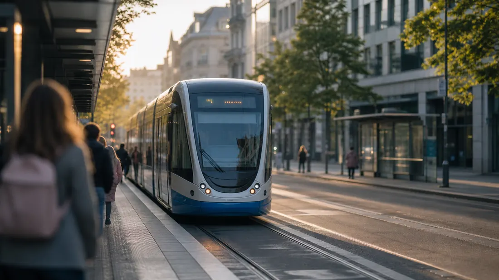

Frankfurt · Verkehr
Testfahrten im Tunnel: U4 entfällt, U5 auf Teilstrecke unterwegs
Andere Linien als Alternativen verstärkt, Busse als Ersatz Weitere Details, Hintergründe und vollständige Angaben stehen in der verlinkten Originalmeldung.

Hessen Aktuell
Straßen, Bahn, ÖPNV, Baustellen, Verkehr und Mobilität.
Topmeldung
Frankfurt · Verkehr
Andere Linien als Alternativen verstärkt, Busse als Ersatz Weitere Details, Hintergründe und vollständige Angaben stehen in der verlinkten Originalmeldung.
Meldungen

Frankfurt · Verkehr
Linien 12, 15, 19 und 21 auf Umwegen/ SEV eingerichtet Weitere Details, Hintergründe und vollständige Angaben stehen in der verlinkten Originalmeldung.

Frankfurt · Verkehr
Linie auf Strecke Heerstraße – Eissporthalle reduziert, U4 bindet Enkheim an Weitere Details, Hintergründe und vollständige Angaben stehen in der verlinkten Originalmeldung.

Frankfurt · Verkehr
Andere Linien als Alternativen verstärkt, Busse als Ersatz Weitere Details, Hintergründe und vollständige Angaben stehen in der verlinkten Originalmeldung.
Frankfurt · Verkehr
Aufgrund von Gleis- und Weichenbauarbeiten fahren die Straßenbahnlinien 12, 15, 17, 18 und 21 auf geänderten Routen. Weitere Details, Hintergründe und vollständige Angaben stehen in der verlinkten Originalmeldung.
Frankfurt · Verkehr
Die Mainova AG beginnt am Montag, 26. Oktober 2026, mit vorbereitenden Maßnahmen für den künftigen Fernwärmeanschluss des Frankfurter Zoos.
Frankfurt · Verkehr
Die Preise für Fernwärme im Tarif Wärme Classic steigen turnusgemäß zum 1. Oktober 2026 leicht an. Das wirkt sich je nach Verbrauch und angeschlossener Leistung unterschiedlich aus. Grundlage hierfür sind die vertraglich festgelegten Preisformeln.
Wiesbaden · Verkehr
Die Henkell-Kunsteisbahn in Wiesbaden startet am Samstag, 7. November, in die neue Eissaison. Weitere Details, Hintergründe und vollständige Angaben stehen in der verlinkten Originalmeldung.
Wiesbaden · Verkehr
Am Donnerstag, 12. November, sind die Digital-Lotsen von 14 bis 16 Uhr in der Musterausstellung Belle Wi, Föhrer Straße 74, zu Gast. Sie beraten alle, die sich in der digitalen Welt besser zurechtfinden möchten. Das Angebot ist kostenfrei, eine Anmeldung ist nicht erforderlich.
Wiesbaden · Verkehr
Wiesbaden (ots) - 1. Wohnungsbrand in Mehrfamilienhaus - 46-Jährige festgenommen, Wiesbaden-Klarenthal, Goerdelerstraße, Sonntag, 01.11.2026, 03:20 Uhr (kq)Am frühen Sonntagmorgen kam es in einem Mehrfamilienhaus in der Goerdelerstraße in ...
Darmstadt · Verkehr
Darmstadt (ots) - Zwischen Samstagabend (31.10.) und Sonntagabend (01.11.) nahmen Kriminelle ein Wohnhaus in der Heinrich-Delp-Straße ins Visier. Ersten Ermittlungen zufolge verschafften sich die noch unbekannten Täter gewaltsam über ein Fenster ...
Hessen · Verkehr
GeoProH liefert ein genaueres Bild des Untergrunds im Oberrheingraben. Land, Kommunen und Unternehmen beraten nächste Erkundungsschritte.
Hessen · Verkehr
Wirtschaftsminister trifft Gründerinnen und Gründer aus Nordhessen – Land arbeitet an einfacheren Förderverfahren und stärkt junge Unternehmen.
Hessen · Verkehr
Spatenstich für die neue B44. Weitere Details, Hintergründe und vollständige Angaben stehen in der verlinkten Originalmeldung.
Hessen · Verkehr
Wirtschaftsminister Kaweh Mansoori beim Hessischen Innenstadtkongress in Marburg – Land unterstützt 138 Kommunen mit rund 52 Millionen Euro – Neuer Bewerbungsaufruf für „Ab in die Mitte!“ startet
Hessen · Verkehr
Hessen und die EU fördern die Entwicklung neuer Infrarotsensoren und die Erforschung gesellschaftlicher Akzeptanz an der Universität Gießen mit bis zu 2,82 Millionen Euro.